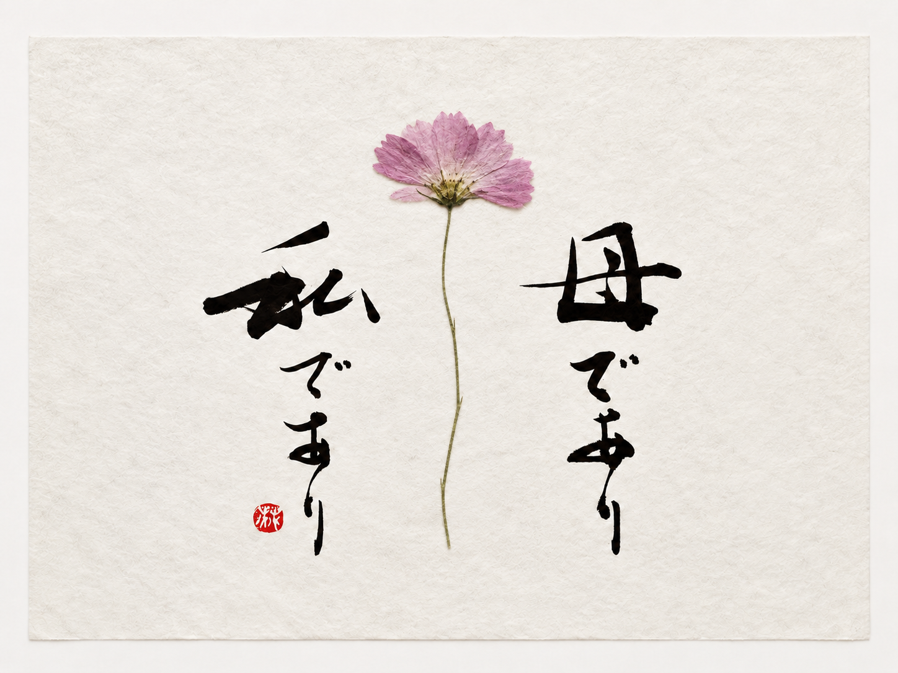
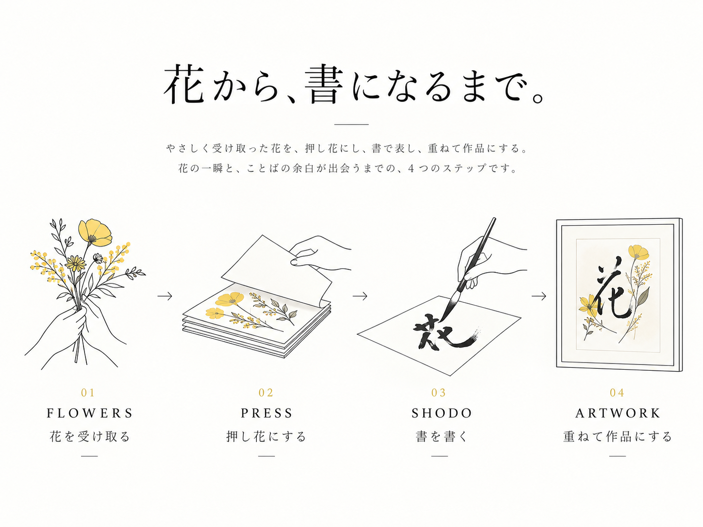
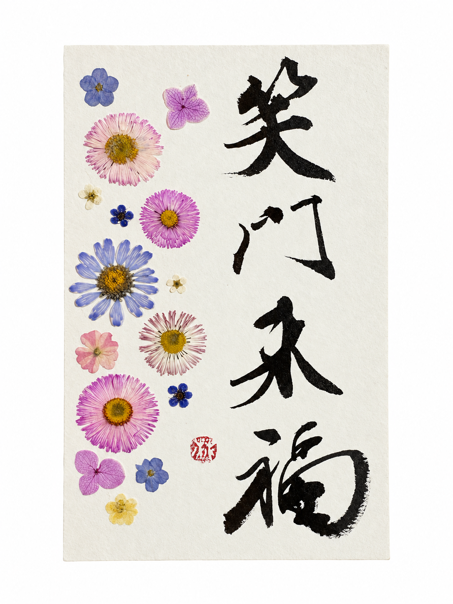

Art Project / Flowers × Shodo
FLOWER
SHODO
花を残し、
書と重ねる。
What is FLOWER SHODO?
FLOWER SHODO
とは？
花を捨てずに、
作品へ。
Concept
廃棄予定の花を押し花にし、
書と重ねるアートプロジェクト
販売できなくなった花や、装飾としての役目を終えた花を押し花として残し、 書いた紙の上に一枚ずつ重ねて作品にします。
Materials
作品に使う花について。
販売期限を迎えた花や、イベント・式場・店舗装飾などで役目を終えた花を押し花にして使用します。
FLOWERS
販売期限を迎えた花、式場・イベント・店舗装飾などで役目を終えた花を押し花として残します。
PAPER
書き味や作品サイズに合わせて、和紙や水彩紙などを選びます。
INK
墨による書を中心に、押し花の色や配置とのバランスを見ながら仕上げます。
Process
花から、書になるまで。

01
花を受け取る
廃棄予定の花や、役目を終えた花を受け取り、次の作品へつなぎます。
02
押し花にする
花の色や形をできるだけ残すように、丁寧に押し花へ仕上げます。
03
書を書く
作品のテーマに合わせて、紙に書をしたためます。
04
重ねて作品にする
押し花を配置し、書と一体になるよう重ねて作品として仕上げます。
Collaboration
廃棄予定の花を、
もう一度作品として
咲かせませんか？
Collaboration / Exhibition
ご提供いただいた花を使った作品制作や展示、企業・ブランドとの共同企画など、ぜひご相談ください。
Workshop
押し花と書を組み合わせた制作体験など、イベントや施設でのワークショップを予定しています。
Project / Order
廃棄予定の花や、思い出の花、イベントで使用した花を押し花にして書と重ね、作品として残します。 花材提供やオーダー制作についてもご相談ください。
FLOWER SHODOのオーダーはこちら →Works
FLOWER SHODO 作品

Contact
LET'S
CREATE.
FLOWER SHODOへの花材提供、展示、共同企画、取材などのご相談はこちらから。